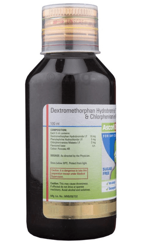
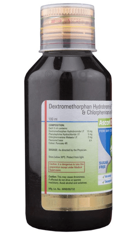

Ascoril D Plus Syrup Sugar Free is a combination medicine used in the treatment of dry cough. It relieves allergic symptoms such as sneezing, runny nose, watery eyes, and throat irritation. It also provides relief from congestion or stuffiness in the nose.
Most side effects do not require any medical attention and disappear as your body adjusts to the medicine. Consult your doctor if they persist or if you're worried about them
Common Side effects of Crocin
Loss of appetite
Nausea
Vomiting
Substitutes
Kronof D Syrup
₹58/syrup
Abituss DX Syrup
₹60/syrup
Deucof Syrup
₹62/syrup
Crocof D Syrup
₹67/syrup
Quick Tips
Ascoril D Plus Syrup Sugar Free helps in the treatment of dry cough.
It is usually taken only for a short time until the symptoms clear up.
Measure the syrup with a special dose-measuring spoon or cup, not a regular table spoon.
Drink extra fluids to help loosen the congestion and lubricate your throat while you are taking this medication.
 
